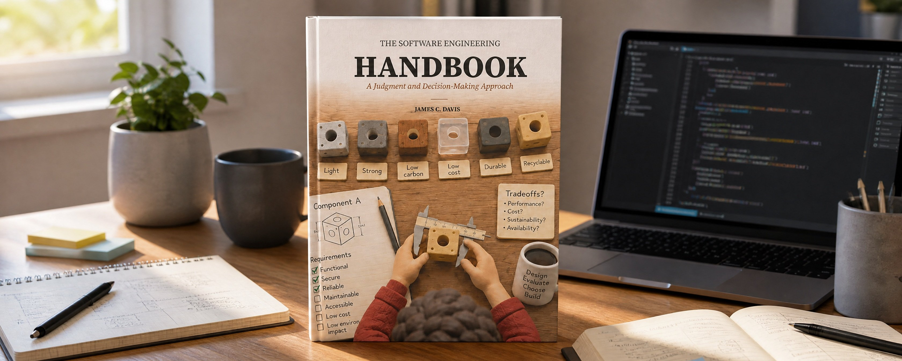
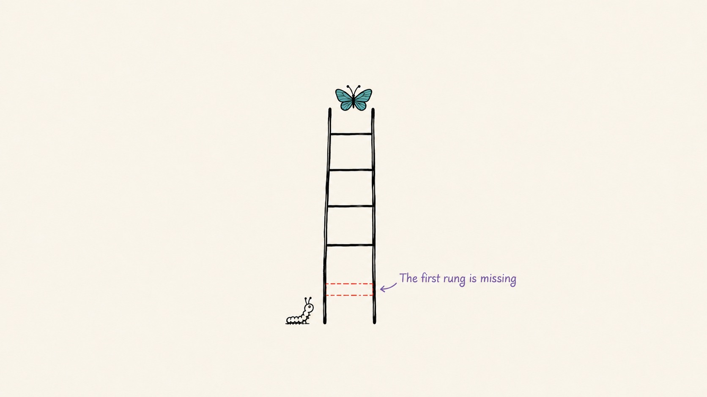
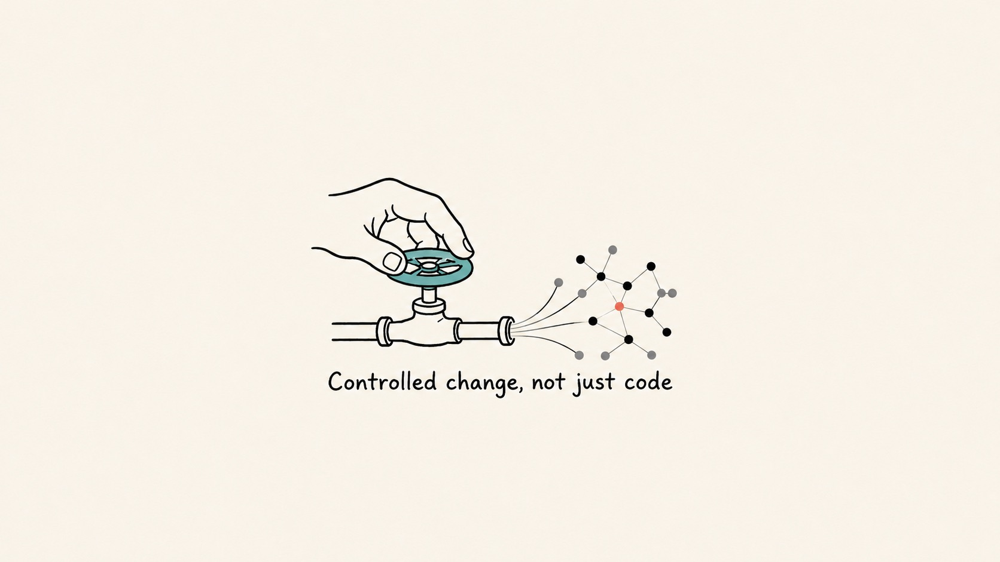
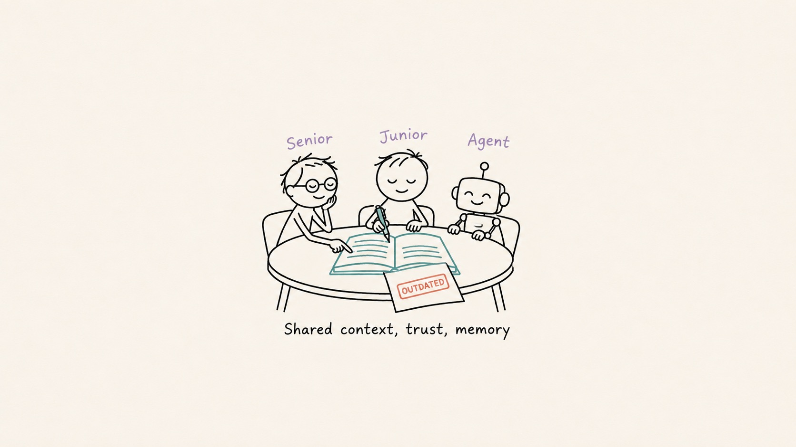
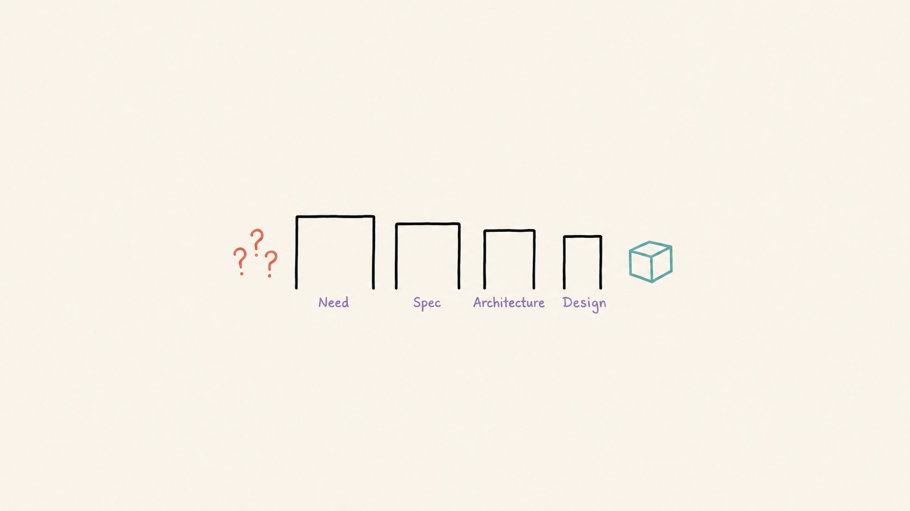
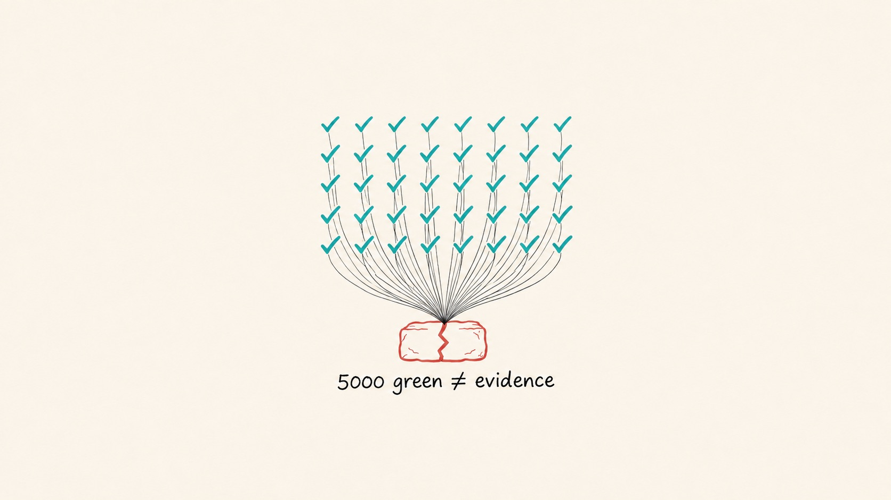
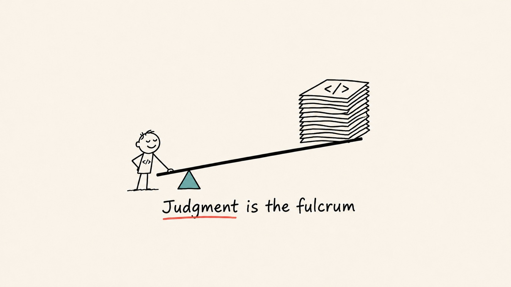
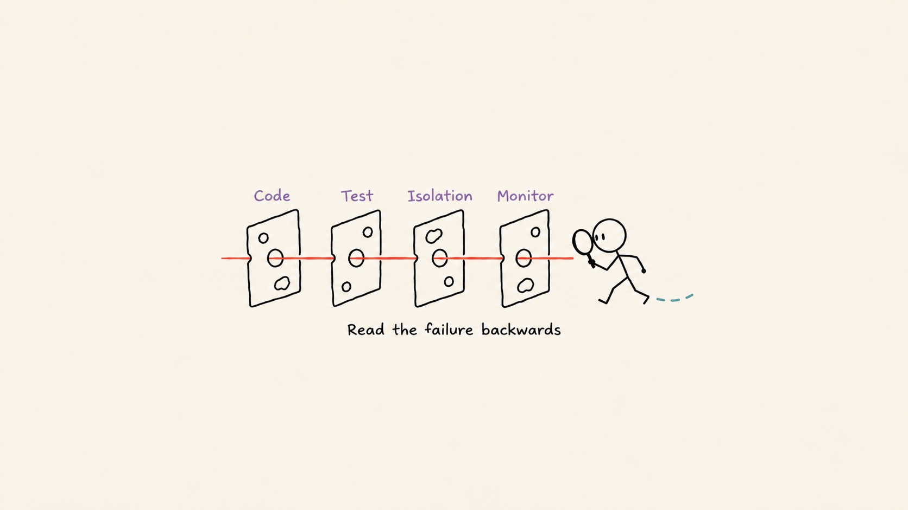

实现可以委托给越来越强的智能体，工程不能委托出去
jexchan 用一篇中文导读推荐 James C. Davis 的手册。这一页讲他的判断。手册里的原句只在核对过的地方分列，不把 155 页书扩成一门课。

怎么看：这是封面合成图。书名分成 Software、Engineering、Handbook 三个词。副标题讲判断和决策。API 的 cover_media 指向这一张，正文各节不挪用它。
代码变得像水电一样便宜之后，他点出两件事：学徒期消失，控制权旁落
场景被他写成已经发生的日常，还加了「大概」。需求交给编码智能体，英文他写作 Coding Agent。一杯咖啡的时间，仓库里已经躺着几百行，结构清晰，甚至自带单元测试。然后问题才浮上来：写代码变得像水电一样便宜，也随手可得。工程师身上那部分不可替代的价值，还剩下什么。
书的身份要按他写的记。时间是 2026 年，月份是 9 月。作者名是 James，姓 Davis。英文书名拆开写：Software，Engineering，Handbook。中文名他写作软件工程师手册。副标题讲的是判断，以及决策方法。
下一句他标明是「作者写道」。他把三件事收成一句类比：蒸汽机替代的是体力；云计算让基础设施变得随取随用；生成式 AI 把代码实现变成廉价商品。危机他只点两件。一件是学徒期消失。另一件是控制权旁落。
补充 · 类比怎么对上手册
手册把三件事分开写。蒸汽机那句讲的是机械动力的规模，云计算那句讲的是基础设施可以按需取用，生成式 AI 那句讲的是实现不再都要人亲手做，瓶颈往上游移。帖子收成一句。『替代体力』是帖子的说法。
他自己的阅读判断是：全书被他写成 11 章，页数写成 142 页。他觉得不是大部头，看完不错，值得推荐。时机是大家都开始用 AI 做开发的当下。对象是正在技术转型的人，以及在想团队该怎样重建工程能力的人。他给的只是一个可以拿来参考的思考框架。书是免费的，下载地址就是官方 PDF。手册扉页的版本、印刷页码和文件页数分列在下面。
补充 · 142 页和 155 个文件页分列
手册扉页写 Edition 1，first published 2026-09-12，last modified 2026-11-17。pdfinfo 的 Pages 是 155。pdftotext 看到结论页脚印刷页码是 142，目录最后一条 Making an engineering decision 在印刷页 140。章 1 之前有 13 个文件页（扉页、版权、前言、导论、致谢、目录）。13 加 142 等于 155。帖子的「共 142 页」对得上印刷末页，对不上文件页数。这里不改他的原话。官方目录在 11 章之外还有 Preface、Introduction、Acknowledgments、Conclusion。
用来练新人的常规工作被接走之后，第一级台阶会缺掉

怎么看：地上是毛毛虫，梯顶是蝴蝶，最下一级用红色虚线标出，旁注 The first rung is missing。位置依据：这一节标题后有一行空格，图中的台阶、毛毛虫、蝴蝶和正文用词对应。API 没有把 media_key 绑到这个空格行。
他先把行业说成靠一种隐性的学徒制在转。大学给的是编程语言，还有数据结构，还有算法和设计模式。这些是关于工程的知识。它们不是工程师怎样思考。人变成熟，靠的是职场头几年：写业务代码，修线上故障，补测试，做代码评审，重构旧系统。在这些琐碎事里，新人才分得清什么是关键细节，什么时候可以妥协，什么底线不能碰。
生成式 AI 接管的，就是那些原本用来把新人带出来的常规工作。他转述前言里的入门阶梯问题：以前学校把毛毛虫送到企业，业界花几年塑成蝴蝶。现在基础实现交给了 AI。应届生还没靠亲手写代码把判断力攒下来，就要去指挥机器，并审查它生成的代码。条件句是：若连机器产出靠不靠谱都判断不了，就难以证明自己配得上阶梯的第一级。
行业不再有奢侈的时间慢慢孵化毛毛虫，它需要从一开始就能做出工程判断的蝴蝶。
jexchan，他称这是作者的原话出处：jexchan · 01
手册前言的脚注用的是同一组比喻：多年里可以送出毛毛虫，让业界把他们塑成蝴蝶；现在要送出小蝴蝶，毕业生从一开始就得有足够的工程判断。帖子多写了「奢侈的时间」和「慢慢孵化」，并把它称为原话。
补充 · 不要把这句中文当成 Davis 的逐字引文
脚注全文是：For many years, we could graduate caterpillars and let industry shape them into butterflies. Now we need to graduate small butterflies that can grow into big ones. 核对用的是下载的 PDF 第 3 个文件页脚注，不是搜索摘要。
他用一句把全书收成：实现可以委托，工程不能委托
这两句是他的概括，不是手册目录上的章名。写作起点接到另一部理论著作。名字是 Model-Based，后面是 Agentic Engineering。简称 MAGE。他把这本手册称为实践伴侣。核心主张被他收成一句。
实现可以委托给能力越来越强的智能体(Agent)，工程不能委托出去。
jexchan 对全书的一句概括出处：jexchan · 01
补充 · 手册结论页的原句
结论页印刷页码 142，英文是 delegate realization without delegating engineering。前面还有一句：可以多委托实现，而不委托对后果的责任。帖子的中文是他的概括。本篇不收 MAGE 全书。
软件这种媒介有四个特质，所以变化会被塞进来

怎么看：左边一只手在拧阀门，管子通向右边的网。图上的字是 Controlled change, not just code。位置依据：02 节标题后的空格行，加上这句和图中英文对得上这一节的标题。
他先问软件是什么样的工程媒介。对照物是土木工程师面对的混凝土，以及钢材打交道的方式，还有芯片工程师的硅晶圆。材料的物理特性决定规则。软件他声明有四个特质，下面分条。
- 高度可变。不必重新开模，也不必造出一个实体。改几行，系统行为就变了。可修订的窗口可以拖得很长。
- 复制成本极低。第一份软件很贵。复制到第一百万份，几乎不要钱。
- 可以跨载体迁移。行为不会永远绑在某一台硬件上。靠接口，也靠抽象，它就能换一个环境继续跑。
- 部署之后还能更新。桥一旦通车，很难再在空中把桥墩换掉。上线之后仍能注入新的逻辑，也能修补漏洞。
四个特质合在一起，社会就把变化塞进软件。汽车底盘出厂就定了。动力响应、电池管理、辅助驾驶，却可以靠软件一直升级。工业机械那副铁架子，可以用上几十年。控制逻辑却跟着产品线改。高杠杆的另一面，是高风险。可复制，再加上可更新，一个人的小改动，几分钟就能铺到几百万台，甚至几十亿台。修复可以这样送达全球。安全漏洞、错误假设，或者一场崩溃，也会按同样的效率被放大。
他转述的定义是：软件工程是受控变更的工程学科
定义是他转述 Davis 的：软件工程是受控变更的工程学科。限定要紧贴着定义。受控不等于把变更挡住，也不等于每一行都亲手敲。工程要的是：一边享受软件的灵活，一边对真正要紧的系统属性、对现实后果，保持知情，把控制留在自己手里，并且为结果担责。
受控不是禁令，也不是每行亲手写。要保住的是知情控制，以及对结果的责任。
演进的规律，他写成从来没变。路线是汇编，然后高级语言，然后开源生态，然后云平台，然后今天的生成式 AI。一项技术把很贵的能力变成廉价的大宗商品时，工程不会消失。瓶颈会往上游移。代码本身不再是瓶颈之后，最贵的变成四件：决定造什么；划定什么不能变；判断结果可不可信；出事时敢不敢叫停。
补充 · 手册定义的英文
第 1 章定义写的是 the engineering discipline of controlled change in software systems。它创造并演进软件，同时对要紧的性质和后果保持足够的控制。帖子的中文定义和这个范围一致。手册没有把「事必躬亲」写成定义的一部分；那句限定是帖子接着写的。
指标只是不完整的模型，Goodhart 定律说明它替代不了判断
他把隐性直觉收成一条链路，并说全书每一章都贯彻它。五站按这个顺序：模型（Model）、性质（Property）、观测（Observation）、证据（Evidence）、判断（Judgment）。决策从心智模型开始，模型推出你关心的性质与预期，观测点收集数据。数据只有先经过模型的解释，才变成证据，然后才做权衡，再做判断。
他写成顺带提醒，其实是限定。每个指标本身都是不完整的模型。延迟容易观测，内存也相对容易。可维护性很难，团队健康度很难，交付价值也很难，都无法用一个数字代表。指标一旦被拿去当考核，人和系统就会改去刷那个数，不再改善背后的真实性质。他直接把这件事叫做 Goodhart 定律。度量能做的，是尽早把模型和现实的偏差露出来。它替代不了思考。
补充 · 手册的措辞更窄
导论里写的是 commonly associated with Goodhart’s Law，也就是人们通常把它和 Goodhart 定律联系在一起。手册没有把这条定律当成自己的定义。帖子写成「这就是 Goodhart 定律」。
选流程看三个维度的位置，不看瀑布还是敏捷谁更正确
作者用第二、第三和第四这些章，收成三块底座。他说这是工程怎么转起来的三个基础。分别是流程，团队，还有组织记忆。四章搭建的是这三块，不是三门新课。流程这一节的标题是：用三个维度来选，别把瀑布和敏捷吵成对错。瀑布开发与敏捷迭代，在他看来不是信仰之争。计划驱动是按工程阶段来切。增量开发是按产品切片来切。两种切法可以混用。选哪种，看三个工程维度落在哪里，不看行业此刻流行什么。
确定性问的是：动手建造之前，关键信息你能知道多少。例子是飞机上的航电。核心约束和接口若在开工前就已经明确，前期规划就极有价值。
可变性问的是：改主意要花多少钱。页面文案或局部参数，他比较了两种花法：花三天去分析，不如花二十分钟直接改。另一头是公共接口若被几百家外部系统调用，或底层表里已经存下十亿条记录。这种要事先想清楚。事后推翻更贵。要不要提前做决定，看的是推翻它的成本，不是做出决定本身的成本。
可分解性问的是：只做一半，这个系统还有没有意义。门槛有两个，可验证，以及可用。半成品就算还不能拿去上线赚钱，只要放进真实环境里做测试，把假设错误暴露出来，增量就值回票价。切片若还能直接让用户得到价值，迭代就更值。
书把「失败的后果有多严重」从那三个维度里拿了出去。高风险的系统照样可以高度迭代。低风险的系统也可以做很严的规划。失败会有多严重，决定的是交付之前证据要有多强。它不决定工作怎么组织。工程师也不是只能接受这三个维度。原型可以提高确定性。模块化可以降低修改成本。垂直切片可以提升可分解性。
5 个人有 10 对，15 个人有 105 对；买到的是能力，付出的是协调

怎么看：三个人标着 Senior、Junior、Agent，合看一本书，书页上盖着 OUTDATED。图下的字是 Shared context, trust, memory。位置依据：03 节标题后的空格行。图中的 context、trust、memory 对得上这一节的共享上下文、信任和组织记忆，不是 API 返回的坐标。
小节标题把两件事放在一起：人类不可替代，而 AI 带来了可替代的智能。加人能不能让项目变快，他用组合数学来答。5 个人，沟通路径是 10 对。15 个人，就是 105 对。买到的是突破单人时间和认知极限的能力。付出去的是协调成本。
手册第三章写的是 Five engineers have ten possible pairs; fifteen have 105。同一段限定：这展示的是不受约束的交互会有多贵，组织设计得好，就不该人人都和人人沟通。数字和 Brooks 1995 连在一起。帖子没有把这句限定写出来。
他把优秀团队的能力说成涌现出来的。三根支柱都脆弱：共享上下文，彼此信任，还有一套清晰的协调机制。管理者若高明，不会把沟通全部取消。人说话时不只是在对进度。还在传隐性知识，也在做师徒带教。该停的是那些只为打听进度的消耗。
人仍然不可替代；生成式 AI 带来的是可替代的大宗智能
他标出这一章最有前瞻性的部分：改写管理学里的派活模型。传统组织里，人不可替代。两个职级相同的人，一个熟历史遗留系统里的坑，一个深谙客户那边的业务流。数据库难题若永远派给最快的专家，眼前最快，却变成单点依赖，还可能把那位专家逼走，同时拿走别人的成长机会。派活一边产出眼前的产品，一边重写组织以后的能力分布。
生成式 AI 第一次把可替代的大宗智能带进工程组织。模型能力可以按需买，可以并行复制，也可以随时升级替换。组织不需要招聘某一个模型实例，也不必培养它、挽留它。两难有三条路。任务只派给智能体，最省钱也最快。让初级工程师自己做，能攒经验。初级工程师带着智能体做，有可能把学习加快，也有可能让新人变成看不懂推理的旁观者。他接着问：若初级岗位都被 AI 换掉去追短期利润，以后谁长成能审查 AI 产出的资深专家。
有能力做决定，和被授权做决定，是两件事。就算以后的智能体能写出完美的绩效评估，或完美的架构裁决，组织仍要人的权威去平衡利益冲突，并承担最终责任。AI 把单兵能覆盖的半径放大了。如果团队底层的评审跟不上，集成和上下文同步也跟不上，单兵的高产出只会把瓶颈丢给下游，把原本就差的协作压垮。
记录是历史证据，不是当下现实；过时记录必须标明已失效
小节标题警告：别让 AI 对着过时文档，自信地胡说。人会忘。专家会走。系统天天在变。所以要有工程记忆。若把聊天记录、会议纪要、临时脚本全部存下，得到的是信息垃圾场。一条知识该不该留下，标准是：未来的人重新发现它，成本会不会高到让人后悔。
未来工程师重新发现它的成本，会不会高到让他们后悔？
jexchan 转述的判断标准，原文加粗出处：jexchan · 03 · 3
迁移脚本若只做一次，忘了也就忘了。安全校验若看起来奇怪，它为什么存在这件事，忘了就可能酿成大祸。这里的「可能」挂在忘了安全校验的后果上。
更尖锐的是知识放在什么载体上。所有文档、还有架构图和记录，都只是某个历史条件下的证据，不是此刻的现实。记录也不中立。写的人有视角盲区。工期估计可能被绩效激励带偏。事后总结可能把当时的混乱写成条理分明。例子是一张支付服务的架构图：2023 年画的，到 2026 年已经被队列和风控服务改过。它还能解释当年的接口为什么长那样，证明不了今天没有耦合。检索一旦很便宜，这件事尤其致命。大语言模型，加上知识图谱，把翻旧资料的成本压低。这件事尤其致命。工程记录若已经过时，或互相矛盾，或说不清谁说了算，AI 会用很低的成本，流畅而且自信地说错。
知识要走完一轮：观察，然后解释，然后表征，然后使用，然后重新评估。记录过时了也不必删。它留着历史为什么走到这里。但必须标明已经失效。反复踩到的坑，和反复被问的高频经验，按成本收益往上升。口头沟通可以变成文档。文档可以变成团队规范。最后固化进代码库的共享抽象，或流水线上的静态检查。后来的工程师和智能体，不靠记性也能躲开。
发现有价值，和决定能负责任地承诺什么，是两件事

怎么看：从左到右，问号后面的框一格比一格小，依次写着 Need、Spec、Architecture、Design，最右边剩一个小立方体。位置依据：04 节标题后的空格行。框上的四个词对得上这一节「从需求、规约、架构到设计」和「收缩不确定性」。
前四章被他说成搭台。第五到第八章收成四道关卡，顺序是需求，然后规约，然后架构，然后设计。不确定性被一步步收小，系统才交到实现的人手里。关卡一的问法是：AI 写完只要五分钟，排期为什么仍要两周。非技术背景的老板会问：生成代码只要五分钟，为什么还说这个功能成本高。
第五章被他收成两件事。一件是发现什么有价值。另一件是决定哪一些我们能负责任地答应下来。需求工程师不是速记员。用户只能拿自己见过的老工具，来描述想象中的方案。利益相关方各说各的。没人主动提的隐性约束，他点了三个：运维监控，合规审计，还有老系统兼容。做法包括访谈，去一线看，拿竞品比。也可以做原型让人挑错，因为人对现成的东西更会挑，不擅长凭空写一份完美说明书。原型是用来买信息的，不等于正式规约。
候选出现以后，选择才开始。四个选项他写成平等的，都合法。一是接受。二是修改，目的是降低风险。三是暂缓，并继续调研。四是直接拒绝。只有被正式接受的那一条，才配叫需求。因为组织要长期为它背债。债务里编码只是小块。贵的是后面的设计对齐，后面还有系统集成。还有安全审计。还有验证证据。还有运维监控。以及以后每次改动都别把原功能弄坏。四个容易混淆的词被他拆开：预测工期，预算，业务目标，工程承诺。乐观的预测若被当成死命令，就是他说的许多项目灾难的起点。
复杂性不会消失，它只会被分配到环境或者机器
关卡二要分开两件事：世界里的假设，和机器给出的保证。需求讲的是世界里要发生的好事。例子是用户生病、影响工作之前，先把睡眠预警发出去。这句话距离能写代码还远。异常怎么定义？多久才算及时？数据若缺失，怎么办？第六章借的是 Zave 与 Jackson 写下的公式：E ∧ S => R。E 代表环境假设，要先成立。S 代表机器规约，也要被满足。然后世界需求 R 才会达成。
复杂性不会凭空消失，只会换地方。他的例子是穿戴式的睡眠监测。若环境假设是用户每晚戴好、电量也够，机器只要算数据，再发提醒。一旦发现用户总是忘记充电，软件就得把电量监测接过去，还要做低电提醒，并做缺失数据补偿。他说的加个小功能，往往就是把人或环境原来担的责任，转给机器。
规约的难处是约束的分寸。管太死，例如过早写死内部数据结构，以后便宜的改动就变成昂贵承诺。留白太多，实现的人或 AI 就只能猜。没写上的部分他分成三种。未知：还没分清哪种后果更好，要靠实验来学，不能靠拍脑袋写死。隐含：大家默认不能那样，纸上却没写。信号是成品交来时，业务方冒出一句「不是这样的」。真正的自由度：几种做法对关键结果都无害，故意留给下游，也留给智能体。好规约不靠写得又长又细。注意力要放在后果重大、却仍不确定的地方。该收的收死，该空的放开，不懂就去买信息。
耦合去不掉，架构只负责决定把它放在哪
关卡三的题目是：把耦合分配好，把风险隔开。规约先圈出还能接受的候选系统。架构再从里面挑一种组织。要让性能、隐私、成本和易修改这些互相打架的目标放在同一个系统里，却要在同一个系统里共存。他转述得很直：架构不是画框图，也不是画箭头。框图只有能回答工程问题，才有价值。耦合消灭不了。架构只决定把它放在哪里。
划边界时他让人反复问一组「一起」。哪些东西应该一起改。还有一起挂，一起扩容，一起保持强一致，一起受权限保护。或者交给同一个团队拥有。黄金法则是：希望发生的变化和交互要容易发生，不希望的扩散要难以发生。康威定律在这里的用法是：技术边界往往就是沟通边界。好边界把认知负担留在局部，也把变更影响、功能复用、故障传播留在局部。复杂到证不明某个组件绝不出错时，用进程隔离，用权限边界，用超时熔断，用资源配额，把它圈住。验证问题就收成后果边界。
几个备选架构怎么选，帖子的叫法是七步法。他写的顺序是：先用硬约束淘汰走不下去的方案，再淘汰被全面压住的劣势方案，然后把核心权衡摊开。例子是牺牲一致性，换来可用性。若某个未知数足以把选择翻掉，就花一点钱做原型，或做压测，把证据买来。最后由人来选，并由人承担责任。手册第七章写的比较是四步，不是七步。四步分别是：把约束和目标分开；淘汰那些不必再判断的方案；比较剩下的真正权衡；只有不确定会改写选择时，才去买证据。
补充 · 七步是帖子的叫法
手册第 7 章原文是 A useful comparison proceeds in four steps。帖子把硬约束淘汰、劣势淘汰、摊开权衡、买证据、人来承担责任收成「七步法」。步数对不上。内容里的淘汰、权衡、买证据，和四步里的后三步是同一类动作。人承担责任是帖子另写的收束。
他还转了两句提醒。架构属性是组件放在一起之后的表现。别只看单个服务的健康看板。每个微服务的延迟都达标，拼起来仍可能超时。版本记录里，两个自称解耦的模块老是出现在同一次提交，他称为架构失灵的实锤。
关键自由度只剩三种动作：沿用、挑选、往上交
关卡四的标题问：局部的小聪明，怎样毁掉整套架构。比喻是：架构师像建筑师，决定承重墙放哪、管井留多少空间。设计像水暖工程师，拿着已经定下的条件去算管径、去选材质、去定水泵。每个关键自由度，只有三种动作。
- 遵循。沿用组织已经定下的框架。日志和重试也在那套通用规范里。不必再造一轮轮子。
- 选择。在局部把机制权衡出来。他的例子是流式处理，把内存压在云主机 4 GB 那条价格红线以下。另一头是直接加载，耗费 6 GB，让成本翻倍。
- 向上升级。局部的每一种做法都满足不了需求时，才用这一档。这最考验担当。
手册第八章把这三种动作写成 Follow、Choose、Escalate。4 GB 和 6 GB 的例子，手册是分成两句写的，差别放在补充里。
补充 · 4 GB 和 6 GB 在手册里是两句
手册第 8 章：云主机内存超过 4 GB 就要更贵的档位，系统会超过成本目标。整篇载入要 6 GB，流式处理要 1 GB，所以内存成了要紧的设计性质。帖子把两句收成「流式压在 4 GB 以下，直接加载 6 GB 让成本翻倍」。1 GB 和「翻倍」都不是手册那两句的原话。
例子要整段留着。架构要求组件 A 必须经过端口去调用组件 B，好以后能换掉 B。有人图省事，让 A 穿透进去读 B 的内部数据。功能上线，单元测试全绿。灾难不在功能，而在认知：文档里的架构模型变成假话。以后若有人相信「换掉 B 不影响 A」，决定就会掉进坑。撞破边界的问题都必须上报。上报到工程环境，也到架构甚至规约。然后要么改规则，要么把例外写明。
实现变便宜以后，设计和实现的关系换了。从前靠在纸上推。现在可以让 AI 很快做出两套机制，当作便宜的探针，去压真实的内存和延迟，用完丢掉，只留结论。速度一高，就出现时间压缩：从前三个月才碰上一次、被当成互不相干的 Bug 修掉的故障，如今几天里挤在一起，反而更容易看见它们共享的结构问题。代价是变更和报错一起涌来，人的注意力变成最缺的资源。
章末他回头看 90 年代的软件外包，并引用 2024 年德勤的调研：受访高管里有 70%，在过去五年把一部分外包收回了内部。设计和实现拆开所以经常翻车，原因被他写成两句：上游没把关键自由度收紧，也没建立办法去核对实现是否符合设计。编码智能体（Coding Agent）被他说成同一幕的重演。重要的设计决策若留给智能体，它擅长写出局部看着合理、放进全局就错的代码。推理过程必须以文档或模型的形式留下来，好接受审查，不能消失在生成出来的代码堆里。
补充 · 手册还有下一句
手册写的是 70 percent of surveyed executives had selectively insourced some previously outsourced scope during the preceding five years。下一句是：教训并不是外包或离岸不能用。条件是交接前把要紧的选择定下来，并且能核对实现是否符合这些决定。帖子没有把这句限定写出来。
可更新性修得了软件，修不了已经造成的伤害

怎么看：许多绿色对勾汇到中间一块裂开的石头上。石头下面写着 5000 green ≠ evidence。位置依据：05 节标题后的空格行。图中的 5000 和 green 对得上这一节的 5000 个全绿测试。
第九章问的是：手里有什么样的证据，才配把系统放进真实世界。这和怎么写测试关系不大。他先说 Davis 拆了两层误解。第一层：低风险、允许试错的消费领域里，快速迭代、在真实使用中学习，确实是理性策略。可是软件能更新，只能把软件自己修好。已经造成的伤害修不了。钱转错了，隐私泄露了，医疗剂量打偏了。补丁再快，也不能让时间倒流。
第二层：工程师担的是公共责任，跟只听雇主吩咐的普通雇员不是同一类责任。交付决定里有三方。后果决定赌注多大。业务方决定自己愿意承受多少风险。工程师单独裁决：现有证据支不支持自己在发布单上签字。成熟包括两头。一头是别在低风险工具上过度工程，白白做半年。另一头是关键风险还没有证据时，敢对老板或客户说不。
V 字被他重画了。左边是工程模型，从需求一直具体到机制。右边是同一层的证据。原则是：必须在那个性质真正存在的层级上收集证据。组件各自的单元测试，证明不了串起来以后的端到端延迟，也证明不了并发幂等性，或权限闭环。
同一份误解生成的 5000 个全绿测试，独立证据强度依然是零
接着他批评 AI 时代的测试幻觉。工具他列了五类：人工评审，动态测试，静态分析与模型检验，量化实验，线上观测。策略另有几类：基于示例，基于性质（他举了蜕变关系），差分测试，模糊测试。工具再花哨，证据强弱仍看七个维度。覆盖度。检出能力。场景代表性。作用域。独立性。前提假设。残余不确定性。
很多团队迷信两样东西：测试的数量，和代码覆盖率。他用变异测试把这层纸戳破。一行代码就算跑了一百遍，断言若形同虚设，你把大于小于号故意改反，它也发现不了。人到了现场，不等于发现得了犯罪。
概率他是按独立来算的。每个测试抓住某个 Bug 的机会写成 1%。5 个都漏掉，他给的数是 95.1%。5000 个都漏掉，他写成几乎为零。这次跳跃被他叫作置信度。死前提是：这些测试必须相互独立。眼下 AI 可以按同一份误解，同时造出业务代码，和 5000 个全绿测试。行覆盖率可以很高。它们仍共享同一个错误前提，或同一个坏掉的断言。于是 5000 次全绿，独立证据仍是零。手册第九章把这个数收窄了：它不是软件已经正确的置信度。
补充 · 手册算的不是「软件正确的置信度」
手册第 9 章：若每个测试有 0.01 的概率抓住并暴露这个缺陷，n 个测试全都漏掉的概率是 (1−p) 的 n 次方。5 个测试约 0.951，5000 个测试约 1.5×10 的 −22 次方。它接着写：这不是做完 n 个测试之后软件正确的概率。帖子把这次飞跃称为「置信度」，又把 5000 次写成「几乎为零」。死前提「必须相互独立」和手册的 independence 一致。
还有一条人的边界。关于视觉和注意力的研究，早就说明人在漫长、枯燥的监控里，极易漏掉罕见的异常。用肉眼去当海量 AI 代码的质检员，这条路走不通。
补充 · 手册点了两篇研究，并写了边界
手册写的是 Warm 等人 2008 的警戒研究，以及 Wolfe 等人 2005 的罕见目标搜索。它明确说：这些发现并不直接测量软件评审。帖子写成「视觉与注意力研究早就证明」，没有写出这个边界。
连续指标靠余量，离散状态靠隔离；上线不是验证的终点
消不掉的不确定性，他分成两类来兜。延迟和内存这种连续量，靠的是余量。门槛被写成 500 毫秒以内。499 毫秒刚过线，420 毫秒才留得下波动。离散状态靠隔离。软件往往在一个边界条件，或一条未探索的分支上，一下子掉进灾难，不会像钢铁那样先弯再断。靠近正确没有意义。覆盖率救不了没走到的分支。兜底只能靠架构隔离，再加权限收紧，再加超时熔断，再加灰度发布，再加快速回滚，把爆炸半径锁住。手册第九章写的是 p99，帖子没写这个词。
补充 · 手册写的是 p99，不是任意一次延迟
手册第 9 章的例子是 p99 latency below 500 ms。420 ms 和 499 ms 都满足要求，余地不同。帖子写成「要求 500 毫秒以内」，没有写 p99。
上线并不是验证结束。世界本身会变。当年成立过的环境假设，会过期，而且是悄悄发生的。上线前因为认识不够而冒险，他称为合理的工程权衡。跑起来之后，伤害的真实证据已经堆起来，团队却拿当年的审核当借口，装看不见，拒绝改。他把这叫工程失职。
两个初级工程师干六个月能消掉的，是偶然限制，不是研发突破
06 节标题后面，plain_text 有一行字：一行图片说明，写着图片 3，并说请单独插入。这是正文里的一行，不是 media_key。它没有说明「图片 3」对应哪一个文件。本页不把某一张图塞进这一行。
最后两章被他放到生涯的高处：一边是未知的边界，一边是失败里的进化。小标题写的是 AI 压缩了苦力，从而逼出新思想。别人常把研发放在书的前面。Davis 把它放在第十章。只有先懂前面的工程约束，才分辨得出突破。研发在他笔下是一笔非对称的赌：失败时损失有限，成功则可能改写可能性边界。投入的是稀缺精力，场合是高度不确定。
值不值得做研发，他借用亚里士多德，把限制分成两类：本质限制，以及偶然限制。他还给了一个苦力测试。系统若现在很慢，或不支持某格式，或接口难用，先设想交给两个称职的初级工程师，时间给到六个月。不改核心理论。手段只是优化代码，或者换库，或者加索引和补逻辑。能消掉，就是偶然限制，归工程任务，算不上研发突破。只有旧思路的每一种忠实实现都绕不开那堵墙，才算本质限制，才要换底层假设、表征或算法。到了 AI 时代，两个初级工程师干半年的活，一个小团队带上智能体，几天或几周就能推平。单靠堆工作量越来越便宜，渐进改进也越来越难被说成重大突破。
研发必须让问题扣住本质限制，再扣住新思想，再扣住对应证据。甚至实验还没做，就要先定止损。每一次证伪，也算高价值的认知收益。给研究者的建议很朴素：在你推得动的范围里，选最难、也最重要的那个问题。
补充 · 手册的名字是 elbow grease
第 10 章的小节标题是 Can this be solved with elbow grease? 想象交给 two competent junior engineers for six months。帖子的「苦力测试」和「两个称职的初级工程师干六个月」对得上这节。亚里士多德只被用来区分本质性质和偶然性质，手册说 here we apply it to engineered systems。
事故之后把整本手册倒过来读，教训要沉到系统、团队和人
这一节的标题是面向失败的工程，做法是把整本手册倒过来读。第十一章开头引了一句工程史里的话，原句在下面的引用里。模型总不完整。证据总有限。优秀团队也可能在没做错事的时候碰上事故。经验不会自动变成判断力。时间过去，也不等于专业在长。他写明职业反思借鉴的是 Donald Schön。要把行动的后果和最初的预期接上，让教训沉进直觉。换一个完全不像的新系统时，仍能嗅出熟悉的危险结构。
失败是工程的核心。
jexchan 转述的第十一章开篇出处：jexchan · 06 · 2
补充 · 这句在手册里有署名
第 11 章开篇是 Failure is central to engineering. 署名 Henry Petroski，1992。帖子写成「一句工程史名言」，没有写出 Petroski。
线上事故一来，平庸的团队忙三件事：把代码修好，写一条能复现当时参数的回归测试，再找出最后敲命令的人来背锅。成熟的团队也做三件，第一件是把执行失误和认知错误分开。他点名 Donald Norman。手滑改错一行配置，叫失误。解法是改界面，再加防呆校验。人以为自己安全地改对了，结果系统崩了，这叫认知错误。喊十遍「以后要小心」没有用。必须改的是工程师头脑中的那套系统模型。
第二件用瑞士奶酪看防御，复盘要记两本账。事故几乎不会只剩一个根因。对齐的几层他点了名：代码缺陷，测试盲区，隔离失效，还有监控漏报。无指责的复盘要留下因果怎么坏掉，更要留下反思：出事之前，哪些模型和证据让一群聪明人相信它是安全的。
第三件是把手册倒着走。平时从需求走到真实世界，中间经过规约、架构、设计、实现和验证。出事就反着问。指标会不会骗人？例子是负载均衡没看见上游丢包，监控全是绿灯，系统已经瘫了。再问验证的作用域，问独立性。问实现是否偏离设计，设计是否选错机制。问架构有没有把共享资源隔开。问规约里对真实世界的假设是不是本来就错。最后问需求是否从一开始就从一开始就漏掉了真正重要的那群人和那些后果。
倒着追完一轮，真正值钱的教训，不能只留在去救火的人脑子里。它要沉到三层。系统这一层：别只「加一条死板的回归测试」，要升级成改接口，或加约束，或加自动化卡点，挡住这一类错误。团队这一层：写成后人找得到、也读得懂底层关系的复盘。同类事故再来时，别再当成孤立事件。工程师心里这一层：抽象要刚刚好。太窄，只认得原样的故障。太宽，就剩一句没用的口号。
这本书不教新语法；他要的人把实现委托出去，同时握住判断
读完他发现两件没有的事：这本书不去教一门新语言的语法，也不推销某个一劳永逸的框架。程序员在焦虑自己会不会被智能体换掉。他归纳这本书的答案：未来的软件工程，不是人和机器比谁写代码更快，也不是比谁语法更熟。
收束是他自己的画面，也是一句邀请。实现可以交给 AI。若人对需求边界一无所知，对系统耦合一无所知，对证据独立性一无所知，对失败后果也一无所知，他写这个人会被浪拍上沙滩。另一类人是真正掌握了软件媒介规律的人，能把关键约束写成显式的，能用架构给不确定性兜底，也敢于在证据不足时踩刹车。这类人借智能体的算力，得到他所说的前所未有的杠杆。书期待的人把实现委托出去，手里仍留着工程控制权，以及最终判断力。梳理若有一点用，他欢迎转给做技术的朋友，也转给管团队的人，并欢迎在评论里谈哪些判断，已经很难再交给 AI。正文停在「全文完」。
补充 · 谁的判断
沙滩、杠杆、评论区邀请，是 jexchan 的收束。用户没有在这条请求里另加判断。本页不把这些句子写成读者本人的结论。
还有两张文内图对不上空格行，位置未确认
7 张文内图里，5 张按节标题后的空格行，以及图中文字和该节用词的对应，放进了 01 到 05。下面两张没有这种对应。不猜它们原来嵌在哪一段，也不把封面挪进正文。

怎么看：小人站在跷跷板短的一头，长的一头是一叠标着代码符号的纸。支点涂成青色。字是 Judgment is the fulcrum，Judgment 下面有红线。画面讲的是判断当支点。plain_text 没有一行空格能单独对上这张，所以不放进某一节。

怎么看：四块带孔的纸从左到右标着 Code、Test、Isolation、Monitor，一条红线穿过孔。右边小人拿放大镜。字是 Read the failure backwards。06 节有一行「图片 3」，但没有 media_key。不把这张图当成那一行已经核对过的插图。
这两张都在帖子的 media_entities 里，字节和 sha256 与采集包的 orig 文件一致。缺的是它们在正文里的段落位置。封面是第 1 张，不算在这 7 张文内图里。
先选，再看原因；答错只标你选的那一项
三题都考怎么用这篇的区分。答错不显示原因。做完不自动标学完。